의공기사 (2012-03-04 기출문제)
1과목: 기초의학 및 의공학
1. 인체의 상태가 외부의 환경 변화에 불구하고 비교적 일정하게 조절되는 기전을 무엇일 하는가?
- 순응성
- 대칭성
- 항상성
- 형기성
(정답률: 92%)

2. 심장 주기 중 심실 압력은 급격히 증가하나 모든 판막이 닫혀 있기 때문에 심실용적은 일정하게 유지되는 시기는?
- 심방 수축기
- 심실의 등장성 수축기
- 급속 구출기
- 감소 구출기
(정답률: 87%)
3. ECG 측정 장치에서 잡음의 원인이 아닌 것은?
- 환자의 움직임
- 전극(electrode)의 접촉 불량
- 제세동장치(defibrillator)의 사용
- 스트레스로 인한 EEG 신호의 증가
(정답률: 78%)
4. 세포막의 선택적 투과에 의해 물질이 한 방향으로만 이동하는 현상은?
- 삼투현상
- 용애끌기
- 확산
- 능동수송
(정답률: 74%)
5. 폐에 대한 설명 중 옳지 않은 것은?
- 산소는 코와 입을 통해서 후두 – 기관 – 기관지 – 기관세지 - 폐포를 통해 모세혈관에 공급된다.
- 산소와 이산화탄소가 교환되는 장소는 폐포이며, 다른 부분에서는 가스교환이 일어나지 않는다.
- 폐의 용적을 측정하는 기구를 spirometer라고 부른다.
- 최대한 들이마시는 공기량 또는 최대한 내쉴 수 있는 공기량을 tidal volume(TV)이라고 한다.
(정답률: 66%)
6. 미세전극(Microelectrode)에 대한 설명으로 옳지 않은 것은?
- 이 전극의 길이는 0.⑤ ~ 10[ɥm] 정도이다.
- 세포의 활동전위를 측정하기 위한 전극이다.
- 금속 미세전극, 유리 마이크로피펫 미세전극 등이 있다.
- 유리 모세관 안에 전해질 용액을 포함하는 것을 금속 미세전극이라 한다.
(정답률: 86%)
7. 신경세포의 시냅스 특성에 대한 설명 중 옳지 않은 것은?
- 신경 섬유에서의 흥분은 모든 방향으로 전도되지만 시냅스에서는 전달되는 방향이 일정하여 반대 방향으로는 전달되지 않는다.
- 흥분이 시냅스를 지나가는데 소요되는 시간을 시냅스 지연이라고 한다.
- 시냅스의 성질상 뉴런이 충분한 산소공급과 미토콘드리아가 충분한 양의 ATP를 생산하고 있을 때는 신속하게 반복하여 활동전압을 나타낼 수 있다.
- 시냅스의 전도 과정은 신경섬유의 전도에 비하여 약물 이나 산소부족 등에 영향을 적게 받는다.
(정답률: 71%)
8. 다음 물리 현상 중 위치를 측정하는 유도성 센서를 적용 할 수 없는 것은?
- 두 개의 코일간의 상호인덕턴스 크기 측정
- 코일 내 삽입된 철심코어의 위치 및 크기에 따른 인덕턴스 변화 측정
- 자기저항이 다른 코어가 코일 내에서 발생시키는 인덕턴스 변화 측정
- 소음이나 진동이 코일 내의 진동판에 전달되도록 함으로써 코일에 유도하는 전압 측정
(정답률: 78%)
9. 일회용 금속판 전극(Disposable electrode)의 사용 방법 중 틀린 것은?
- 전극 부착면을 먼저 깨끗이 한다.
- 전극의 전해질 보호 필름을 제거하고 부착한다.
- 전극이 쉽게 움직일 수 있도록 전극선을 연결한다.
- 전해질이 마르지 않도록 한다.
(정답률: 92%)
10. 인체 피부에 삽입하는 바늘형 전극(needle electrode)의 재질로 부적합한 것은?
- 금(Au)
- 백금(Pt)
- 아연(Zn)
- 스테인리스 강
(정답률: 86%)
11. “헤모글로빈의 산소해리곡선”을 오른쪽으로 이동시키는 조건은?
- 탄산가스의 분압 감소
- 혈액의 pH 감소
- 체온의 감소
- DPG(diphosphoglycerate)의 농도 감소
(정답률: 72%)
12. 신장에서 물질의 재흡수나 분비에 대한 설명으로 틀린 것은?
- 세뇨관 재흡수는 네프론 안에 있는 물과 다른 분자들이 세뇨관 주위 공간으로 이동하는 것을 말한다.
- 크레아티닌이나 Inulin 등은 사구체에서 여과된 후 재흡수 및 분비가 거의 일어나지 않는다.
- 사구체 수입소동맥(afferent arteriole)이 수축하면 정수압이 증가하고 여과율이 증가한다.
- 네프론의 벽을 지나 여과액으로의 물질 이동을 세뇨관 분비라 한다.
(정답률: 47%)
13. 평행판 모양의 용량성 센서에서 정전 용량을 변화시킬 수 있는 방법이 아닌 것은?
- 판의 유효 넓이
- 판 사이의 간격
- 유전체
- 전하량
(정답률: 86%)
14. 물질에 물리적 힘을 인가하면 전위가 발생하고 전압을 인가하면 변형이 생기는 성질을 이용한 센서를 무엇이라 하는가?
- 탄성게이지
- 압전센서
- 차동변환기
- 정전용량센서
(정답률: 88%)
15. 열전대(thermo couple)에 대한 설명으로 틀린 것은?
- 제벡(seebeck)효과를 이용한다.
- 온도를 측정하기 위해 사용한다.
- 한 종류의 금속을 사용한다.
- 내구성이 좋아 극한 상황에서 많이 이용된다.
(정답률: 84%)
16. 다음은 피부표면에 부착된 전극의 전기적 등가회로에서 전극-페이스트 경계면의 등가회로를 나타낸다. 이에 대한 설명으로 옳지 않은 것은?
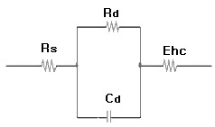
- Ehc는 전극표면에 나타나는 반전지 전위를 의미한다.
- Rs는 땅에 의한 저항성분과 전피의 저항성분을 제외한 전해질 전체의 저항성분을 의미한다.
- Rd는 전극-전해질(페이스트)의 저항성분을 의미한다.
- Cd는 전극-전해질(페이스트)의 커패시턴스 성분을 의미한다.
(정답률: 83%)
17. 평형전위에 대한 설명으로 틀린 것은?
- 네른스트식으로 설명할 수 있다.
- 세포 내외에 존재하는 모든 이온들의 투과성을 고려하였다.
- K+이온만이 세포막을 통과하는 이온이라고 가정하였을 때 구할 수 있다.
- 막의 양쪽 전위치가 90mV가 되어 안쪽 기준으로 –90mV가 평형전위가 된다.
(정답률: 60%)
18. 세포외에 K+이 많아지는 과칼륨혈증(HyperKalemia) 상태가 되면 탈분극이 지연되는 현상이 생긴다. 이때 심전도 소견은?
- P파는 높아진다.
- QRS파는 넓어(Widening)진다.
- T파는 낮아진다.
- U파가 소멸된다.
(정답률: 90%)
19. 전해질 겔(Electrolyte gel)의 역할로 틀린 것은?
- 전극과 피부사이에 절연층을 만든다.
- 전극과 피부간의 전기적 저항을 줄인다.
- 전극과 피부간의 전기적 접촉 상태를 좋게 유지한다.
- 피부 각질층의 전기 전도도를 증가시킨다.
(정답률: 86%)
20. 골격의 기능으로 적합한 것은?
- 소화기능
- 배설기능
- 발성기능
- 조혈기능
(정답률: 93%)
2과목: 의용전자공학
21. 호흡기의 기능평가를 위해 측정이 필요한 생체변수가아닌 것은?
- 기체농도
- 폐용적(부피)
- 골밀도
- 기체압력
(정답률: 92%)
22. 라디오 같은 동조 회로의 특수 분야에 사용되며 출력신호에 포함된 고조파를 제거하기 위해 공진형 부하를 사용하는 것은?
- A급 증폭기
- B급 증폭기
- C급 증폭기
- D급 증폭기
(정답률: 85%)
23. 다음의 정보통신용 버스 중 병렬전송이 아닌 것은?
- VME bus
- Multi bus
- RS-232C
- IEEE-488 bus
(정답률: 87%)
24. 생체계측기기의 성능을 정량적으로 나타내기 위한 정적 특성에 대한 설명으로 옳은 것은?
- 정확도는 참값과 측정된 값과의 차이를 측정값으로 나눈 것으로 나타낸다.
- 정밀도는 측정치를 표시할 수 있는 유효숫자의 범위를 나타낸다.
- 해상도는 측정될 수 있는 최대의 증감치를 나타낸다.
- 재현성은 정확성을 나타낸다.
(정답률: 67%)
25. 차동증폭기에서 차등신호에 대한 전압이득은 Ad이고, 동상신호에 대한 전압이득이 Ac일 때, 동상신호제거비(CMRR)는?
- Ac + Ad
- Ac - Ad
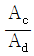
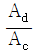
(정답률: 84%)
26. 2개의 스위치가 동시에 ON 이 되었을 경우에만 1의 출력 신호가 나오는 게이트는?
- AND 게이트
- OR 게이트
- NOT 게이트
- NOR 게이트
(정답률: 86%)
27. 다음 교류 브리지 회로의 검류계 G에 전류가 흐르지 않았을 때 C의 값을 표시한 것은?
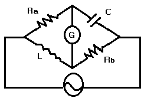
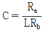
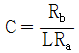
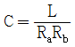
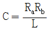
(정답률: 60%)
28. 평면의 도체 표면에 각 주파수 w의 고주파가 흐르면 표면의 전류 밀도가 내부보다 커지는 현상은?
- 표피 효과
- 톰슨 효과
- 펠티어 효과
- 제벡 효과
(정답률: 65%)
29. 두 저항 R1=1[Ω], R2=4[Ω]가 병렬 연결된 회로에 10[V] 전압이 인가되면 전체회로에 흐르는 전류는?
- 0.8[A]
- 1[A]
- 10[A]
- 12.5[A]
(정답률: 75%)
30. 다음 R-L 병렬회로에서 저항 R=4[Ω]과 유도리액턴스 XL=3[Ω]을 병렬로 연결한 회로의 역률은?
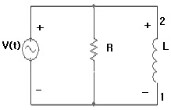
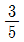
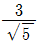
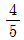
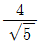
(정답률: 57%)
31. 다음 파형에서 리플계수(ripple factor)를 구하는 식으로 옳은 것은?
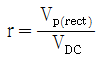
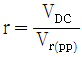
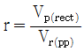
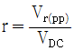
(정답률: 78%)
32. 커패시터 필터에 관한 설명으로 틀린 것은?
- 액동률
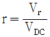
이다.(여기서, Vr은 리플전압의 실효값이며, VDC는 필터의 진류전압의 평균값이다. ) - 리플이 클수록 효율적인 필터이다.
- 커패시터의 용량을 크게 하면 출력전압은 직류에 가까워진다.
- 커패시터의 충전과 방전에 의한 출력전압의 변동이 리플전압(ripple voltage)이다.
(정답률: 84%)
33. 직선 도선에 전류가 흐를 때 생성되는 자기장의 자력선 방향과 전류의 방향 관계를 설명하는데 가장 적절한 법칙은?
- 플래밍의 왼손법칙
- 플래밍의 오른손법칙
- 렌쯔의 법칙
- 암페어의 오른나사 법칙
(정답률: 54%)
34. 다음 R-L-C 직렬회로에서 R=4[Ω], XL=9[Ω], XC=6[Ω]이고, 전압 V=100[V]의 사인파 교류전압을 인가했을 때 이 회로에 흐르는 전류[A]의 크기는?
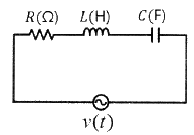
- 10[A]
- 15[A]
- 20[A]
- 25[A]
(정답률: 84%)
35. 멀티플렉서의 설명으로 틀린 것은?
- 복수의 입력에서 하나의 입력을 택하고 그 로직을 출력에 통과시키는 디바이스다.
- 병렬로 입력된 데이터를 제어 입력에 의해 컨트롤하여 직렬로 다수의 데이터 출력을 꺼내는 회로이다.
- 멀티플렉서는 로우터리 스위치의 기능을 가지고 있다.
- 멀티플렉서는 일반적으로 2n개의 입력선과 n개의 선택선, 그리고 한 개의 출력선으로 구성된다.
(정답률: 68%)
36. 심전도의 설명으로 옳지 않은 것은?
- 심장근육이 수축과 이완할 때 발생되는 활동전위이다.
- 심장의 이상 유, 무를 확인할 때 사용한다.
- 협심증, 심근경색, 부정맥 등 심장질환 진단에 사용한다.
- 생체 신호 중 가장 높은 주파수 대역을 가진다.
(정답률: 88%)
37. 측정된 생체신호의 저주파수 성분을 제거하기 위하여 적합한 회로는?
- 적분기
- 미분기
- 비교기
- 가산기
(정답률: 82%)
38. 컬렉터 접지회로 증폭기(이미터 플로어)의 특징에 해당하는 것은?
- 전압증폭은 비교적 크다.
- 입력 임피던스는 작은 편이다.
- 입력과 출력 신호는 같은 위상이다.
- 출력은 컬렉터에서 얻는다.
(정답률: 59%)
39. 달링톤 트랜지스터의 설명으로 옳은 것은?
- 베이스에서 본 입력임피던스가 매우 작다.
- 항상 3개의 트랜지스터로 이루어져 있다.
- 합성 전류이득이 두 트랜지스터 전류이득의 곱으로 매우 크다.
- 실리콘 트랜지스터의 경우 VBE = 0.7V이다.
(정답률: 69%)
40. 배전압 정류회로의 특징에 대한 설명 중 틀린 것은?
- 승압변압기가 필요하다.
- 주로 고전압용이다.
- 큰 전류 출력이 어렵다.
- 용량이 큰 커패시터를 사용하면 성능이 좋다.
(정답률: 67%)
3과목: 의료안전·법규 및 정보
41. 치료과정의 행위, 기구, 목적 그리고 부위를 순서로 배열한 조합코드를 이용해 의료행위를 분류하고자 한다. 행위가 10가지, 기구가 10가지, 목적이 10가지 그리고 부위가 20가지 있다고 할 때 이를 위해 필요한 코드의 총 개수는?
- 50가지
- 10000가지
- 10020가지
- 20000가지
(정답률: 88%)
42. 자료 보안 및 보호를 위해 기술적인 측면에서 고려해야 할 사항과 가장 관계가 먼 것은?
- 감시 프로그램
- 자료의 암호화
- 환자의 알 권리
- 사용자 실벽을 통한 진료기록의 접근 통제
(정답률: 83%)
43. 지식습득 방법 중 인간두뇌의 신경해부학적 사실을 묘사하여 신경세포인 뉴런의 작동방식을 컴퓨터상에 구현한 계산모델을 의미하는 것은?
- 규칙기반추론
- 신경회로망
- 사례기반추론
- 데이터마이닝
(정답률: 85%)
44. 의료기기의 전기⦁기계적 안전에 관한 공통 기준규격에 의거 “정상적인 사용 시에 손으로 지지하는 것을 의도한 기기”를 무엇이라 하는가?
- 고정형 기기
- 이동형 기기
- 수지형 기기
- 영구설치형 기기
(정답률: 89%)
45. 데이터베이스 스키마와 관련된 설명 중 옳지 않은 것은?
- 3단계 데이터베이스를 구성하는 스키마에는 외부 스키마, 개념스키마, 내부스키마가 있다.
- 내부스키마는 물리적 저장장치 입장에서의 데이터의 구조 및 정의를 의미한다.
- 개념스키마는 모든 응용에 대한 전체적으로 통합된 데이터 구조이다.
- 스키마는 데이터베이스 전체를 운용하는 소프트웨어 시스템이다.
(정답률: 61%)
46. 의료가스의 통일된 규격을 사용하고, 설치장소를 효과적으로 배치하며, 경보장치를 설치하는 이유로 적당한 것은?
- 의료가스의 적정용량 확보
- 의료가스의 안전한 유지관리
- 의료가스의 청정상태 유지
- 의료가스의 비용절감
(정답률: 89%)
47. PACS를 구성하는 경우에 발생하는 가장 큰 문제점은 제조사마다 서로 다른 데이터의 규격을 사용하는 것이다. 이러한 문제점을 극복하기 위해서 데이터와 의료영상을 효율적으로 전송하고 교환할 수 있도록 마련한 표준안은?
- ISO
- HL7
- EDI
- DICOM
(정답률: 70%)
48. 의료가스의 중앙공급장치에 대한 설명으로 틀린 것은?
- 감시시스템을 설치하여 작동조건과 공급조건을 쉽게 파악할 수 있도록 한다.
- 입자, 일산화질소 등과 같은 불순물을 제거하고 청경하고 고순도로 압축된 공기를 공급한다.
- 진공펌프는 수밀형 혹은 유일형으로 하여 고흡입력을 유지시킨다.
- 파이프 내의 응결을 방지하기 위해 공기는 높은 이슬점을 가진 습한 상태로 공급되어야 한다.
(정답률: 88%)
49. 의료기기와 관련하여 부여할 수 있는 인증 마크가 아닌 것은?
- GH(Goods of Health) 마크
- ISO(International Organization for Standardization) 마크
- EMI(Electromagnetic Interference) 마크
- HACCP(Hazard Analysis Critical Control Point) 마크
(정답률: 88%)
50. 병원에서 사용되는 의료가스 중에서 용도가 다른 것은?
- 고압산소치료용
- 특수 용접용
- 인공호흡용
- 마취용
(정답률: 89%)
51. 매크로 쇼크(macro shock)에 대한 설명 중 틀린 것은?
- 접촉면적이 넓으면 감지전류 값이 낮다.
- 전류의 주파수가 높아지면 감지전류 값이 높다.
- 체중이 무거우면 감지전류 값이 높다.
- 마이크로쇼크에 비해 심실세동의 위험이 적다.
(정답률: 48%)
52. 의료기기법에서 정한 의료기기위원회의 역할 (조사 ＞ 신뢰)이 아닌 것은?
- 의료기기의 허가에 관한 사항
- 의료기기의 지정에 관한 사항
- 의료기기의 등급분류에 관한 사항
- 의료기기의 기준규격에 관한 사항
(정답률: 66%)
53. 의료기기의 수입을 업으로 하려는 자는 누구의 수입허가를 받아야 하는가?
- 보건복지부장관
- 관할 자치구 장
- 식품의약품안전청장
- 의사협회
(정답률: 87%)
54. 의료정보 용어 및 분류체계에 대한 설명 중 틀린 것은?
- 환자기록을 재구성하기 위해서는 공통된 용어로 된 기록이 필요하다.
- 임상연구 등의 대규모 자료처리를 위해서는 코드화가 필요하다.
- 코드화를 하면 코드만 보고도 의료기록을 쉽게 이해할 수 있다.
- 코드를 사용하면 약어의 사용 등으로 인한 환자기록의 모호성을 제거할 수 있다.
(정답률: 86%)
55. 의료기기법령상 의료기기의 용기나 외장에 반드시 기재해야 할 사항이 아닌 것은?
- 용량
- 제품번호
- 사용방법
- 제조일자 또는 수입일자와 주소
(정답률: 87%)
56. 다음 중 원격의료의 활용 분야와 가장 거리가 먼 것은?
- 재택 진료
- 정확한 진료
- 인터넷 가상병원
- 원격영상진단
(정답률: 91%)
57. PACS 도입 시 기대효과로 적당하지 않은 것은?
- 임상획득 비용 절감
- 화상처리기법 등을 통한 진료의 질 향상
- 인터넷 등을 통한 타 병원과의 정보 교환이 용이
- 영상 데이터의 영구적인 보관이 가능
(정답률: 72%)
58. 의료기기 안전성⦁유효성 심사에 관한 자료 중 임상 시험성적에 관한 자료에 반드시 포함되어야 할 내용에 해당되지 않는 것은?
- 임상시험대상 의료기기의 제조번호
- 기존 다른 유사 의료기기와의 유효성 비교
- 임상시험 방법
- 임상시험 기간
(정답률: 78%)
59. 멸균은 “미생물에 물리, 화학적 자극을 가하여 완전히 사멸 제거하는 것”으로, 다음 중 쉽고 빠르지만 테프론 재질에 맞지 않는 멸균 방법은?
- 스팀멸균
- 감마멸균
- 전자빔 멸균
- 산화에틸렌 멸균
(정답률: 81%)
60. 다음 중 HL7의 메시지 구조가 아닌 것은?
- 송수신 일자
- 세그먼트
- 메시지
- 필드
(정답률: 78%)
4과목: 의료기기
61. 전기적으로 근육이나 신경을 자극함으로써 근수축을 유발하여 근육이 마비되어 있는 동안 근수축 감각유지를 위해 사용하는 치료기는?
- 간접전류치료기(ITC)
- 신경근전기자극치료기(ESI)
- 경피신경전기자극치료기(TENS)
- 극초단파치료기(Microwave Diathermy)
(정답률: 72%)
62. 수액펌프에는 주로 알람기능이 첨부되어 있는데, 이러한 알람의 경보사항이 될 수 없는 것은?
- 챔버에 약물방울이 규칙적으로 떨어지는 경우
- 회로에 과부화 발생시
- 수액내 기포 발생시
- 설정된 값에 따라 약물이 다 주입된 상태
(정답률: 89%)
63. PET에서 사용하는 방사선 동위원소가 통과할 때 발생하는 감마선 원자의 에너지는?
- 약 0.1 MeV
- 약 0.3 MeV
- 약 0.5 MeV
- 약 1.0 MeV
(정답률: 75%)
64. 체외충격파쇄석기의 에너지 발생원 중에서 세라믹 소자에 고주파를 인가하여 발생하는 압력파를 이용하는 방식은?
- 압전소자 방식
- 수중방전 방식
- 미소발파 방식
- 전자진동 방식
(정답률: 83%)
65. 콜리메이터(colimator)가 장착된 헬멧을 통하여 뇌 속에 있는 병소에 집중적으로 방사선을 조사하는 장치는?
- 선형가속장치
- 베타트론
- 감마 나이프
- 사이클로트론
(정답률: 86%)
66. 양전자방출단층촬영장치(PET)에서 해상도와 관계없는 것은?
- 소멸되기 직전의 두 양성자(positron) 운동에너지에 의한 직진 운동 각도의 불확정성(angular uncertainty)
- 방출되는 양성자의 운동에너지에 기인한 양성자의 위치와 그 소멸위치(positron range)의 불확정성
- 검출 채널의 샘플링 간격 즉, 검출기와 검출기 사이의 간격
- 방사선 동위원소를 정맥주사로 인체에 주입한 후 전신에 퍼지는 동안의 데이터 획득시간(scanning time)
(정답률: 64%)
67. 초음파 영상기의 TM-mode에 관한 설명으로 틀린 것은?
- M-mode의 표시방식을 2차원으로 변환한 것이다.
- 반향파의 강도를 휘도신호로 변환하여 표시한다.
- 수평축을 반향파 신호의 시간축으로 표시한다.
- 반향파 신호를 수직방향으로 순차적으로 표시한다.
(정답률: 49%)
68. 인공펌프를 사용하여 심장 바이패스 등을 실시하여 심근의 부하를 감소할 목적 또는 심혈관 순환을 개선하여 심근수축력의 회복 목적으로 사용되는 의료기기는?
- 보조순환장치
- 인공심폐기
- 인공심장
- 인공신장기
(정답률: 63%)
69. 초음파 영상 촬영의 B-모드 방식에서 선형 주사의 주사선수를 128개, 관찰하려는 깊이가 20cm, 음속이 1540m/s 이라면, 1초에 얻을 수 있는 화면의 수(Frame rate)는 약 얼마인가?
- 5[frame/sec]
- 15[frame/sec]
- 30[frame/sec]
- 60[frame/sec]
(정답률: 65%)
70. 페이스메이커 이식 후 주의사항으로 틀린 것은?
- 강한 전기나 자석의 영향을 받을 가능성이 있는 기기를 주의해야한다.
- 휴대폰은 사용 가능하지만 페이스메이커와 일정 거리 이상 유지하는 것이 좋다.
- MRI는 페이스메이커를 영구적으로 손상시키므로 MRI 촬영을 할 수 없다.
- 자석요, 고주파/초음파 온열치료기 등은 사용할 수 있다.
(정답률: 74%)
71. 체열진단기에서 사용하는 적외선의 파장대역으로 가장 옳은 것은?
- 1 ~ 3㎛
- 3 ~ 5㎛
- 5 ~ 8㎛
- 8 ~ 10㎛
(정답률: 42%)
72. 연속적으로 심박출량을 측정하기에 적합한 방식은?
- Fick's법
- 지시약 희석법
- 온도 희석법
- 임피던스 희석법
(정답률: 74%)
73. 다음 중 인공심폐기의 구성요소가 아닌 것은?
- 혈구와 혈장분리기
- 저혈조(blood reservoir)
- 정맥 cannula
- 혈액펌프
(정답률: 81%)
74. MRI 시스템에서 자장의 세기가 3 Tesla 이면 수소원자의 Larmor 주파수는?
- 약 32 MHz
- 약 64 MHz
- 약 128 MHz
- 약 256 MHz
(정답률: 63%)
75. 고주파에 의해 가속된 전자가 표적에 충돌하여 발생되는 X-선을 이용한 치료용 의료기기는?
- 감마나이프(Gamma Knife)
- 사이클로트론(Cyclotron)
- 선형가속기(Linac)
- 클라이스트론(Klystron)
(정답률: 67%)
76. 감마카메라를 이루는 구성요소가 아닌 것은?
- 섬광체
- 광전자증배관
- 고주파코일
- 시준기
(정답률: 74%)
77. X-선 CT 영상의 특성 중 특정 부위와 배경 사이의 CT-번호가 다를 때 얼마나 작은 CT-번호 차이를 구별할 수 있는가를 나타내는 척도는?
- 시야각(field of view)
- 균일도(uniformity)
- 대조해상도(contrast resolution)
- 공간해상도(spatial resolution)
(정답률: 62%)
78. 임상검사기로 사용되는 분광광도계와 그 원리에 관한 설명으로 적절하지 못한 것은?
- 혈청, 소변, 척수액 등에는 시약을 첨가하여 검사한다.
- 임상물질들은 광 에너지를 선택적으로 흡수나 방출한다.
- 광선으로 X-선을 사용한다.
- 특정 물질의 에너지 흡수 정도를 측정하여 농도를 알아낸다.
(정답률: 81%)
79. 진단용 방사선 발생장치에서 X-선 장치에 관한 설명으로 틀린 것은?
- X-선 광자의 에너지 단위는 주로 KeV가 사용된다.
- 1keV 에너지는 전자가 1kV의 전위차를 이동하면서 얻는 운동에너지이다.
- 진단방사선기기에서 사용하는 X-선 에너지의 범위는 20 ~ 150 KeV 이다.
- X-선의 파장이 짧을수록 에너지는 감소한다.
(정답률: 87%)
80. 마취기는 마취가스를 넣은 실린더, 압력계가 달린 감압장치, 유량계, 판막장치, 기화기, 탄산가스 흡착기 등으로 이루어져 있는데, 액체로 된 휘발성 흡입 마취제를 가스 상태로 증발시키는 장치는?
- 유량계
- 감압장치
- 판막장치
- 기화기
(정답률: 89%)
5과목: 의용기계공학
81. 물리적 에너지 중의 하나인 방사선을 이용한 의공학 기술에 해당하는 것만 나열한 것은?
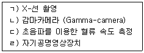
- ㄱ, ㄴ
- ㄱ, ㄴ, ㄷ
- ㄱ, ㄴ, ㄷ, ㄹ
- ㄴ, ㄷ, ㄹ
(정답률: 88%)
82. 보행에서 단하지 지지 (single-limb-support) 기간은 다음 중 무엇과 같은가?
- 같은 하지에서의 양하지 지지(double-limb-support) 기간
- 반대편 하지에서의 양하지 지지(double-limb-support) 기간
- 반대편 하지에서의 유각기(swing) 기간
- 같은 하지에서의 유각기(swing) 기간
(정답률: 73%)
83. 생체재료 삽입에 의하여 손상된 상처조직 주위에서 일어나는 염증반응이 진행되는 순서를 옳게 나열한 것은?
- 모세혈관 팽창 → 세포침투 → 피복형성 → 재형성 → 소멸
- 모세혈관 팽창 → 세포침투 → 재형성 → 피복형성 → 소멸
- 모세혈관 팽창 → 세포침투 → 추출 → 소멸 → 피복 형성
- 모세혈관 팽창 → 세포침투 → 소멸 → 추출 → 피복 형성
(정답률: 75%)
84. 생체에서 바로 채취한 신선한 골(뼈) 조직과 건조한 골 조직을 비교하여 인장시험을 실시하였다. 골조직이 건조될 경우 나타나는 특징은?
- 탄성계수가 낮아진다.
- 인성이 높아진다.
- 파괴 시 흡수되는 에너지가 줄어든다.
- 파괴 변형률이 높아진다.
(정답률: 63%)
85. 다음의 조건 중에서 생체재료의 생체적합성을 평가하는 방법이 아닌 것은?
- 세포 독성시험
- 혈액이나 혈액 구성요소의 변형시험
- 염증이나 알레르기 유발시험
- 기계적 강도시험
(정답률: 91%)
86. 다음 항목들 중 생체조직이 나타내는 일반적인 물리적 특성으로만 나열된 것은?
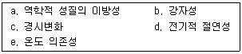
- a, d, e
- a, c, e
- b, c, d
- b, d, e
(정답률: 84%)
87. 변형률(strain)에 대한 설명 중 옳지 않은 것은?
- 변형률은 단위가 없는 무차원의 값이다.
- 변형률은 벡터량이다.
- 탄성물질에 대한 변형률은 진단병력에 반비례한다.
- 인질 변형률은 “일”으로, 압축 변형률은 “읍”으로 간주한다.
(정답률: 63%)
88. 혈관직경이 원래의 반으로 줄어들면 유동의 저항은 몇 배가 되는가?
- 2
- 4
- 8
- 16
(정답률: 72%)
89. 생체재료의 기계적 성질을 평가하기 위한 방법에는 정적 시험(static test)과 동적 시험(dynamic test)이 있다. 다음 시험 방법 중 반복적인 하중에 의하여 발생하는 기계적 성질을 측정하는 동적 시험에 속하는 것은?
- 인장시험
- 압축시험
- 피로시험
- 경도시험
(정답률: 88%)
90. 초음파 음속의 반경이 2[mm], 주파수가 3[MHz]일 때, 근거리 음장은? (단, 음속은 6×106 [mm/sec]이다.)
- 1[mm]
- 2[mm]
- 4[mm]
- 6[mm]
(정답률: 50%)
91. 생체조직에 임플란트가 이식되어 접촉하게 될 경우에 두 계면 사이에서 나타나는 생리학적 반응이 아닌 것은?
- 세포예정사(apotosis) 또는 세포 자살이 일어남
- 생체고분자들이 임플란트의 표면에 부착됨
- 임플란트와 접촉한 세포에서 생리화학적 신호를 유발
- 임플란트와 접촉한 단백질의 형상이 변화됨
(정답률: 69%)
92. 일반적으로 테플론(Teflon)으로 잘 알려져 있고 주로 인공혈관을 만드는데 이용되는 것은?
- PP(Polypropylene)
- Polyester
- PE(Poly ethylene)
- PTFE(Polytetrafluoroethylene)
(정답률: 84%)
93. 슬관절 최대굴곡으로부터 경골이 지면에 수직이 되는 시기는?
- 하중수용기
- 중간유각기
- 전유각기
- 중간입각기
(정답률: 79%)
94. 다음 중 입자 방사선에 해당되지 않는 것은?
- 전자선
- 양자선
- 양성자선
- γ선
(정답률: 77%)
95. 생분해성 고분자인 폴리글리콜릭산(PGA)은 생체 내에서 광도를 유지하는 기간이 1개월, 폴리락틱산(PLA)은 6개월 정도이다. 이 성질들을 이용한 두 고분자의 대표적인 응용분야는?
- PGA : 흡수성 봉합사, PLA : 골고정판
- PGA : 골고정판, PLA : 흡수성 봉합사
- PGA : 골고정 나사, PLA : 흡수성 봉합사
- PGA : 골고정판, PLA : 골고정 나사
(정답률: 75%)
96. 크롬(Cr)의 특성 설명 중 틀린 것은?
- 내마모성이 크다.
- 내식성이 크다.
- 경도가 트다.
- 열성에 약하다.
(정답률: 68%)
97. 다음 항목들 중 옳은 내용으로만 짝지어진 것은?
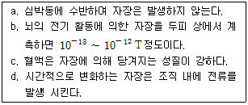
- a, b
- c, d
- a, c
- b, d
(정답률: 82%)
98. 다음 설명의 각 ( )안의 내용으로 옳은 것은?
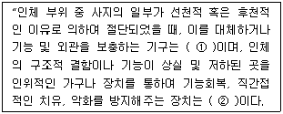
- ① 의지, ② 보조기
- ① 보조기, ② 의지
- ① 인공관절, ② 보조기
- ① 의지, ② 인공관절
(정답률: 84%)
99. 형상기억 합금이 의료용으로 이용되는 곳으로 옳지 않은 것은?
- 치과 교정용 와이어
- 음혈제거용 필터
- 척추측만증 교정용 pole
- 임플란트용 재료
(정답률: 67%)
100. 생체조직에서 발생할 열이 전달되는 정도에 영향을 미치는 인자들의 조합이 아닌 것은?
- 조직의 밀도, 조직의 비열, 혈류량
- 조직의 밀도, 조직의 비열, 대류량
- 혈류량, 혈액의 밀도, 혈액의 비열
- 조직의 밀도, 혈액의 밀도, 혈류량
(정답률: 75%)